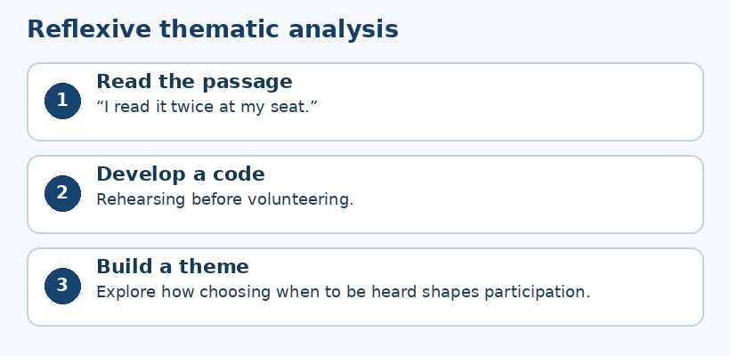
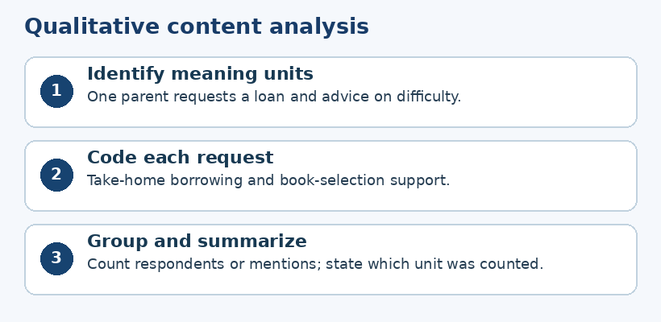
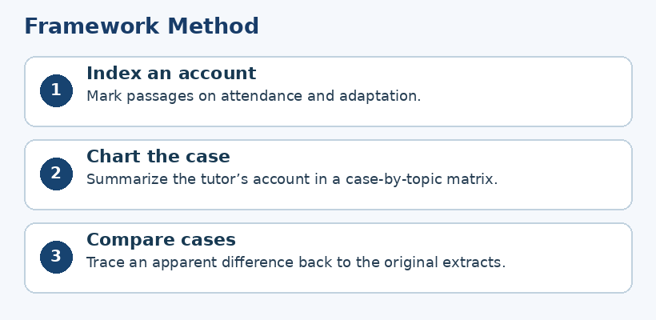
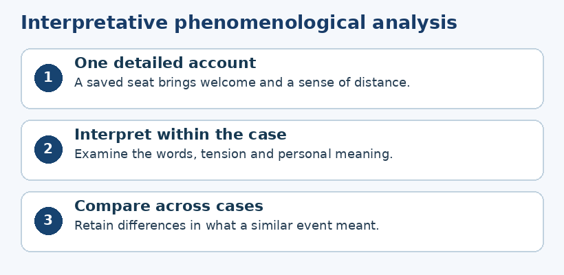
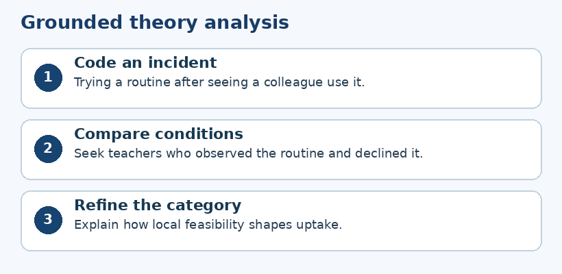

Use this method to interpret a recurring pattern of meaning across accounts. The researcher develops a theme by showing how different comments support an idea that answers the question.
What shared meanings run through participants’ accounts?
Learners describe practising privately before reading aloud. Explore how being able to choose when others listen shapes their willingness to read.
Read the full interview once before assigning codes. On a second reading, pay attention to verbs such as “waited,” “practised” and “chose.” Record the sequence of actions and the audience each learner describes. An initial code can stay close to the speaker’s words. A later code may interpret what the sequence accomplishes for that learner.
Lay out the coded passages and try two possible explanations. One might be that rehearsal builds skill. Another might be that deciding when to begin gives the learner control over public mistakes. Look for passages that could distinguish the explanations. A learner who already knows the passage but still waits for a friend to listen would be especially informative.
Accounts and Materials
Collect accounts with enough detail to interpret what an experience meant. Interviews, journals or open-ended responses can work. Keep each extract connected to its speaker and context.
The analysis reflects the questions you ask and what you bring to reading the accounts. A teacher may interpret volunteering as eagerness because participation is rewarded in class.
How to check. Write down your first explanation for one learner’s action. Find the exact words that support it and consider another plausible explanation.
If the condition is weak. Keep a memo showing why you retained or revised the interpretation. A colleague can offer a different reading for discussion.
Depth of accounts
A theme needs enough connected detail to explain how a shared meaning takes shape.
How to check. Read the sentences before and after each candidate extract. Check who chose the reading turn, who was listening and what the learner anticipated.
If the condition is weak. If responses consist mainly of adjectives such as “good” or “scary,” seek descriptions of a particular lesson or narrow the question to what the material supports.
Coherence of themes
Extracts in a theme should illuminate its central idea from more than one angle.
How to check. Write a one-sentence claim for each proposed theme. Ask whether the claim explains why the extracts belong together.
If the condition is weak. Separate patterns that require different explanations. Combine themes if their evidence and central claims are effectively interchangeable.
How the Analysis Works
Read and reread the full accounts. Note early interpretations and your relationship to the participants.
Code passages for actions and meanings. Group codes around a possible central idea, then revisit extracts and the full data set to refine its scope.
Name each theme in terms of what it explains. Write the argument alongside extracts, including accounts that complicate the pattern.

Read the passage: “I read it twice at my seat.” Develop a code: Rehearsing before volunteering. Build a theme: Explore how choosing when to be heard shapes participation.
From Evidence to Finding
Illustrative passage: “I read it twice at my seat. Then I raised my hand.” A possible code is rehearsing before volunteering. A second learner says, “When I could choose my turn, I stopped worrying about mistakes.” A possible code is choosing when to be heard.
Across these accounts, a possible theme is control over public exposure makes participation feel manageable. Check whether learners who prefer spontaneous turns describe confidence differently.
Applying the approach
Try this additional fictional account: “If I’m called first, I just get it over with. Waiting makes me more nervous.” Record it alongside the two accounts above. This learner also describes anticipation, yet waiting increases discomfort. Reconsider a broad claim that private rehearsal always encourages participation. Try a narrower claim about how the timing and predictability of public reading shape learners’ sense of control.
Ask a colleague to read the three accounts and annotate the moment at which each learner feels most exposed. Discuss why your annotations differ. If one colleague emphasises classmates’ reactions and another emphasises the teacher’s timing, return to the passages and their surrounding interviews. Both ideas may merit development if different evidence supports each.
I read it twice at my seat before raising my hand.
Rehearsing privately
Preparation supports readiness
Who chose the timing?
I stopped worrying when I could choose my turn.
Choosing exposure
Control over timing matters
Does this occur without rehearsal?
I prefer to go first and get it over with.
Shortening anticipation
Waiting can increase discomfort
Revise any claim that delay always helps
Interpretation and Reporting
Explain each theme through an analytic claim, an anonymised excerpt and your interpretation. Show variation across accounts.
A possible findings paragraph in this fictional exercise begins, “Learners described the waiting period before public reading in different ways. Choosing a turn gave some time to prepare, while an early turn relieved another learner of the strain of waiting.” Follow it with a brief extract and explain the particular words carrying the interpretation. Use school and participant details only at the level needed to understand the claim.
For the methods section, identify who read the accounts, how researchers’ classroom roles informed their readings, and how the theme changed during analysis. A sentence describing how the early-turn account reshaped the candidate theme gives readers more insight than a list of the phases you completed.
Alternatives and Common Mistakes
For a descriptive inventory of types of responses, consider qualitative content analysis.
A list of interview topics gives readers little sense of what the comments mean. Make the interpretive link explicit. In reflexive thematic analysis, reflect on differing readings with colleagues without treating agreement scores as a quality requirement.
References
Braun, V., & Clarke, V. (2019). Reflecting on reflexive thematic analysis. Qualitative Research in Sport, Exercise and Health, 11(4), 589–597. https://doi.org/10.1080/2159676X.2019.1628806
Braun, V., & Clarke, V. (2021). One size fits all? What counts as quality practice in (reflexive) thematic analysis? Qualitative Research in Psychology, 18(3), 328–352. https://doi.org/10.1080/14780887.2020.1769238
Qualitative content analysis
Overview
Use qualitative content analysis to organise statements into categories that clarify what people report, ask for or prioritise. The question determines how much interpretation the categories require.
Classify families’ suggestions for home reading support. One comment may suggest both a borrowing system and help selecting books.
Create a small working sheet with a response identifier, original passage, short description, preliminary code and proposed category. Write the description in ordinary language before naming a category. “We share one phone after dinner” describes access to a device. It does not on its own tell you whether the family wants printed materials, a different schedule or a second device.
Give each category a short definition and at least one example that comes close to its boundary. Under help choosing a book, include requests about difficulty level or suitability for independent reading. A request for longer borrowing belongs elsewhere unless it also mentions choosing suitable material. Test the boundaries using several varied responses before coding the rest.
Accounts and Materials
Gather responses about a clearly defined issue. Keep an identifier per response and record if people could give several suggestions.
A conventional analysis builds categories by reading the responses. A directed analysis begins with concepts supplied by an existing theory or framework.
How to check. For each initial category, identify whether it came from a family’s words or an earlier framework. Examine several responses that fit poorly.
If the condition is weak. Create space for unanticipated needs and revise the coding guide. If prior concepts shaped the analysis, describe their role in the report.
Unit of analysis
A single family response may contain more than one request and may qualify a request in the next sentence.
How to check. Split a sample into meaning units, then reread each whole response. Check whether the division preserves the speaker’s meaning.
If the condition is weak. Keep a response identifier attached to each unit. Retain linked clauses when splitting them would reverse or distort the meaning.
Basis for counts
A count of suggestions answers a different question from a count of families who suggested something.
How to check. Ask whether a family repeating one request in three sentences would count once or three times in the planned summary.
If the condition is weak. Count each respondent once per category when reporting respondents. Describe overlapping categories and identify the number who answered.
How the Analysis Works
Define a unit of meaning and read a sample. If using conventional content analysis, derive codes from the text. In directed analysis, start with concepts from an existing framework and retain a place for new ideas.
Group codes into categories. Define each category, document the boundaries and revisit previously coded responses after revisions.
Apply the scheme to the remaining material. Interpret what the categories describe and inspect passages that fit more than one category.

Identify meaning units: One parent requests a loan and advice on difficulty. Code each request: Take-home borrowing and book-selection support. Group and summarize: Count respondents or mentions; state which unit was counted.
From Evidence to Finding
Illustrative response: “Let us take a book home on Friday and tell us which one my child can read alone.” Split this into two requests. Code them as take-home borrowing and advice on difficulty. Group them under access to books and help choosing a book.
This single respondent contributes to two categories. If four of ten respondents mention borrowing, report four respondents and explain how many answered the question.
Applying the approach
In this fictional exercise, Family A requests borrowing and selection advice, Family B asks to keep a borrowed book longer, and Family C says, “There are plenty of books at home, but he stops when the words get hard.” First code only what the statements support. Family C describes a reading difficulty and has made no explicit request for additional books or advice.
Now decide whether your question covers explicit requests only or also includes reported barriers. Under the broader question, Family C contributes to difficulty sustaining reading. Under the narrower one, retain the comment as contextual evidence. Record the decision and revisit earlier responses that described problems indirectly. A change in the study question should never silently change the meaning of a category.
Define the categories and illustrate each with an excerpt. If reporting counts, distinguish the number of respondents from the number of mentions.
Show how the statement about Friday borrowing generated two categories. Give a short category definition, a representative excerpt and an explanation of what the category captures. If the report includes a frequency table, state whether the base consists of all invited families, returned forms or families who answered the open-ended item. Blank responses supply no evidence about which support families want.
Close with what the analysis permits a school to investigate next. Recurring requests about book difficulty could justify testing clearer labels on books. The comments alone cannot establish how broadly families would use those labels. Invite attention to less frequent suggestions too, especially when one identifies a barrier that others had little opportunity to mention.
Alternatives and Common Mistakes
If your question asks how people give an experience meaning across accounts, consider reflexive thematic analysis.
Do not treat a frequently mentioned request as the school’s highest priority without additional evidence. A short open-ended response may omit something the respondent still values.
Hsieh, H.-F., & Shannon, S. E. (2005). Three approaches to qualitative content analysis. Qualitative Health Research, 15(9), 1277–1288. https://doi.org/10.1177/1049732305276687
Framework Method
Overview
Use a case-by-category matrix to answer applied questions about similarities and differences. Comparing across a row preserves one participant’s account. Comparing down a column brings cases into conversation.
Methodological sources (Gale et al., 2013; Goldsmith, 2021).
When to Use It
How do experiences compare across cases on the same topics?
Put each reading tutor in a row and scheduling, grouping and feedback in columns. Compare how tutors adjust groups when attendance changes.
Begin with two contrasting interviews and draft columns for attendance pattern, tutor response, reasons offered and perceived consequence. Read another interview before fixing the framework. If tutors repeatedly mention space constraints, consider adding a separate column so the role of space can be examined. Apply the revised structure to cases already summarised.
Write a short phrase in each cell using language faithful to the speaker. Under reasons offered, “did not want late arrivals to miss the directions” preserves more meaning than “concern.” Keep interpretations in a separate memo until you can compare cases. Start the memo by describing what varies and then identify a possible reason for the difference.
Accounts and Materials
Use interviews or written accounts with overlapping topics. Retain the original passages so the summaries in each matrix cell can be checked in context.
The matrix supports comparison when different participants have had an opportunity to discuss relevant topics.
How to check. Compare the interview guides and look for a common question about late arrivals. Check whether everyone was asked about changes to grouping.
If the condition is weak. Mark differences in coverage. For a topic explored with only two tutors, limit the comparison to those tutors or seek further material.
Consistent case unit
Each row must represent a clearly defined case. A tutor, a session and a school give different perspectives on the same events.
How to check. Examine what would happen if one tutor conducted three sessions. Would one row capture stable practice or hide important differences among sessions?
If the condition is weak. Choose a unit consistent with the question. Use session references within a tutor’s row when an exception helps explain a decision.
Traceable summaries
A cell condenses the evidence and can lose timing, uncertainty or exceptions during that process.
How to check. Choose one cell and ask a second reader to locate its supporting passage. Check whether the summary preserved qualifications such as “usually” or “when another tutor is here.”
If the condition is weak. Add a passage reference, revise incomplete wording and retain links to more than one excerpt where the participant described different situations.
How the Analysis Works
Read several accounts and code passages. Develop an initial set of categories and refine it as more cases are considered.
Apply the framework across the material. Put one case in each row and one category in each column. Enter brief summaries with references back to passages.
Read across cases, then return to each individual case. Examine rival explanations, unusual cases and gaps.

Index an account: Mark passages on attendance and adaptation. Chart the case: Summarize the tutor’s account in a case-by-topic matrix. Compare cases: Trace an apparent difference back to the original extracts.
From Evidence to Finding
Illustrative tutor comment: “On market days half the group comes late, so I pair arrivals with someone already reading.” Code late arrival and regrouping. Under attendance, record market-day lateness. Under adaptation, record pairing late arrivals with readers.
Compare a tutor who delays the whole session. The matrix suggests two responses to similar disruption, which can be explored against session length and available space.
Applying the approach
Build two illustrative rows. Tutor A reports arrivals spread over ten minutes, immediate pairing and a room where two pairs can work independently. Tutor B reports arrivals spread over a similar period, a shared opening explanation and one copy of the model text. Comparison down the response column reveals two routines. Comparison across each row points to different requirements for getting started.
Add Tutor C, who reports having enough copies but still waits because learners agreed to begin together. This case challenges the idea that materials alone determine the tutor’s response. Return to earlier transcripts for comments about learner preferences. A revised interpretation might identify both resource availability and expectations about participation as possible influences, with different supporting evidence for each.
Describe patterns within and across cases, with examples of exceptions. Explain how the matrix led to the interpretation.
A useful output combines a short matrix extract with the reasoning it supports. Use short case labels, a few well-chosen columns and a note explaining how summaries were prepared. In the narrative, show what changed when Tutor C was added. If room details could identify a particular tutor, describe only the contextual feature needed for the comparison.
Distinguish a tutor’s account of learner effects from evidence collected directly from learners. For example, “Tutor A believed pairing eased entry” accurately identifies the source of the observation. A claim that pairing improved reading outcomes would need additional evidence. Identify any relevant cells with insufficient information before drawing a school-wide conclusion.
Alternatives and Common Mistakes
When each account follows a very different course and individual meaning is central, choose a case-focused approach.
An empty matrix cell may mean an interviewer never asked about that topic. Distinguish missing information from a participant explicitly saying something did not occur.
References
Gale, N. K., Heath, G., Cameron, E., Rashid, S., & Redwood, S. (2013). Using the framework method for the analysis of qualitative data in multi-disciplinary health research. BMC Medical Research Methodology, 13, Article 117. https://doi.org/10.1186/1471-2288-13-117
IPA examines the meaning of an experience from each participant’s perspective and develops an interpretive account. Give individual cases sustained attention before discussing what they share.
Methodological sources (Nizza et al., 2021; Smith & Osborn, 2015).
When to Use It
How does each person make sense of a particular experience?
Interview learners who have returned after an extended absence about what their first week back meant to them.
Read the first learner’s full interview before making a combined list of themes. Note what happened, how the learner describes the event and which words seem to carry particular weight. If the speaker switches from “we” to “they,” examine the surrounding narrative before drawing any conclusion about belonging. The change might simply refer to a different group.
Move from detailed notes to a short statement of experiential meaning for this learner. Write several statements, explore connections and draft a case summary. Repeat the process from the beginning with the next interview. A useful check is to write what surprised you in the second case before looking again at the first case’s labels.
Accounts and Materials
Use rich first-person accounts from people with a meaningful experience in common. Invite examples of specific moments and the significance participants gave them.
Participants need a meaningful connection to the phenomenon so that close comparisons have a sensible basis.
How to check. Define what “returning to school” means here. Check whether a transfer learner, a learner returning from a brief illness and one returning after a long absence experienced comparable transitions.
If the condition is weak. Narrow the recruitment criteria or explain why a particular variation belongs within the question. A small purposive group allows sustained case-by-case attention.
Rich first-person material
IPA depends on accounts of what an experience felt like and meant to the person who lived it.
How to check. Select a passage and check whether the speaker describes an episode in personal terms. General comments about what teachers should do offer a different kind of evidence.
If the condition is weak. Invite a participant to describe a specific moment, what drew their attention and how they understood it then. Respect their choice about sensitive details.
Interpretive restraint
The researcher interprets the learner’s attempt to make sense of an experience. An interpretation should remain open to examination against the words and wider account.
How to check. Underline the evidence for each claim about belonging. Mark separately what the learner states and what you infer.
If the condition is weak. Use qualified wording where meanings are uncertain. Remove an inference if the account offers too little support and retain plausible competing readings.
How the Analysis Works
Read one account repeatedly. Note descriptions, language choices and possible meanings, and group related insights within that case.
Begin afresh with the next account. Write separate case summaries before examining similarities and divergent meanings.
Develop a cross-case account while showing how each claim relates to individual participants and the interviewer’s interpretive position.

One detailed account: A saved seat brings welcome and a sense of distance. Interpret within the case: Examine the words, tension and personal meaning. Compare across cases: Retain differences in what a similar event meant.
From Evidence to Finding
Illustrative account: “They saved me a seat, but every time the teacher said ‘catch up’ I felt like a visitor.” The saved seat and the word visitor suggest competing feelings of welcome and distance.
Another learner describes a saved seat as a sign of belonging. Read both cases closely before proposing that familiar gestures can acquire different meanings on return.
Applying the approach
In the fictional account above, examine the tension between someone saving a seat and the repeated instruction to catch up. “Visitor” can suggest being admitted to a place without yet feeling fully part of it. Reread what happens later that day. An invitation to join a familiar group might change the meaning of the earlier experience.
Now consider a second fictional account: “My seat was still there. I knew I didn’t have to introduce myself again.” Here continuity carries reassurance. A provisional cross-case idea could be the search for signs of an established place in the classroom. Preserve the first learner’s uncertainty and the second learner’s relief when presenting that idea. A single label such as “welcome” would obscure the difference.
Develop a close interpretation of individual accounts, then show shared and differing meanings with short, anonymised excerpts.
Write a brief account for each case before presenting common ground. Show enough of a passage for readers to follow the interpretation, then explain how a particular phrase supports it. Anonymise distinctive episodes carefully in a small school. If a contextual detail is essential but readily identifies a learner, consider reporting a less identifying extract that supports the same interpretation.
Describe your relationship to the participants and the questions you brought to the interviews. For instance, a teacher accustomed to tracking missed work might initially read every reference to catching up as an academic concern. Document how attending to the learner’s description of being a visitor opened an additional interpretation about belonging.
Alternatives and Common Mistakes
Brief exit slips may support a content analysis if they contain too little detail for an in-depth account.
Avoid inferring a learner’s thoughts beyond what the account supports or treating a small purposive sample as representative of every returning learner.
References
Nizza, I. E., Farr, J., & Smith, J. A. (2021). Achieving excellence in interpretative phenomenological analysis (IPA): Four markers of high quality. Qualitative Research in Psychology, 18(3), 369–386. https://doi.org/10.1080/14780887.2020.1854404
Smith, J. A., & Osborn, M. (2015). Interpretative phenomenological analysis as a useful methodology for research on the lived experience of pain. British Journal of Pain, 9(1), 41–42. https://doi.org/10.1177/2049463714541642
Grounded theory
Overview
Grounded theory is a study design for developing an explanation of a process through repeated comparison between data and emerging concepts. Plan for analysis and further collection to inform each other.
Methodological sources (Chun Tie et al., 2019; Sbaraini et al., 2011).
When to Use It
What process could explain how a practice develops?
Explore how teachers begin using a feedback routine. Early interviews point to peer observation, so seek cases where teachers had different opportunities to observe peers.
Begin with a few teachers who can describe a recent decision about a feedback routine. Ask them to reconstruct the events around the decision. Code actions using phrases such as checking a colleague’s example, estimating remaining class time or shortening a response task. Compare the same teacher’s first trial with a later occasion when the routine was abandoned.
Use a memo to move from actions to a possible explanation. A teacher who tried the routine after observation and a teacher who adapted it after reading a sample may both be testing whether it will fit their own class. Write down what you would need to see to distinguish that idea from a simpler explanation such as following a supervisor’s request.
Accounts and Materials
Gather accounts or observations of a process in varied situations. Build time into the study to return to participants or select new cases in response to unresolved questions.
The study needs a question about how actions and relationships unfold under varying conditions.
How to check. Try describing a sequence involving a teacher considering, adapting, trying or abandoning a feedback routine. Check whether change over time is central to the inquiry.
If the condition is weak. Refine the question to identify a process you can study. If the available material supports only a list of opinions, choose an analysis suited to those opinions.
Iterative sampling
Emerging categories guide what evidence to collect next. An early interview should be able to change a later interview or sampling decision.
How to check. Examine the timetable and permissions. Can you return to teachers, seek a contrasting case or observe a practice that earlier interviews made relevant?
If the condition is weak. Build analysis periods into the fieldwork. If later sampling is impossible, report which grounded theory techniques were used and limit the claim about theory development.
Conceptual development
A category earns its place by explaining how incidents relate. Repeated use of the same word is insufficient.
How to check. Test a proposed category against a different episode. Ask what varies, under which conditions it matters, and which observation would challenge it.
If the condition is weak. Compare incidents, revise category definitions and keep memos recording when the proposed relationship holds or fails.
How the Analysis Works
Code early episodes in terms of actions. Compare incidents and use analytic memos to propose relationships among categories.
Use emerging questions to guide theoretical sampling. Seek cases that challenge the provisional account and explain where it needs revision.
Specify the conditions, actions and consequences in the proposed explanation. Document how additional comparisons changed it.

Code an incident: Trying a routine after seeing a colleague use it. Compare conditions: Seek teachers who observed the routine and declined it. Refine the category: Explain how local feasibility shapes uptake.
From Evidence to Finding
Illustrative comment: “I tried the exit slip after watching my colleague use it with my class.” Code borrowing a routine after seeing it work locally. A contrasting teacher says, “I watched it, but Thursday’s short period put me off.”
A memo might propose that observation prompts a trial when teachers see time to adapt the routine. Seek teachers who adopted without observing and those who observed repeatedly without trying it.
Applying the approach
Suppose the next fictional interview is with a teacher who observed three colleagues and still delayed the first trial. Ask what made each demonstration usable or unusable in that teacher’s own setting. If all three demonstrations used materials unavailable locally, the idea of seeing a workable version becomes more specific. Seek a teacher who adapted the routine using ordinary paper to explore that condition.
Compare what happened after teachers tried the routine. One kept it after using the responses to change the next lesson. Another stopped when the slips accumulated unread. A candidate explanation might describe two decisions, whether the routine can be tried and whether it yields information the teacher can act on. Look for cases where the routine continued despite limited feedback use before finalising that account.
Watched a colleague use an exit slip with my class
Seeking local demonstration
A workable example invites a trial
Seek adoption without observation
Thursday’s short period put me off
Estimating time to adapt
Demonstration alone may be insufficient
Seek trials in short periods
I stopped when the slips piled up unread
Reconsidering usefulness
Continuing may depend on actionable feedback
Seek continuation despite unread responses
Interpretation and Reporting
Explain how the categories relate in a model of the process. Give examples that show its conditions, variations and limits.
Present the proposed process as connected claims in plain language, with a diagram only if the relationships are clearer that way. For each major relationship, show the incidents that support it and a condition under which it changes. Link an actual sampling decision to a particular question raised by the analysis so readers can see how later evidence shaped the explanation.
Report the grounded theory tradition you used and explain why collection ended. A time limit, incomplete access to contrasting cases and well-developed categories are different grounds for ending a study. Describe unresolved relationships and the settings represented. A school might then examine whether administrative expectations sustain routine use under different conditions, a question deliberately left open by this example.
Alternatives and Common Mistakes
For a fixed set of interviews intended to describe common experiences, consider thematic analysis.
A diagram of a few themes is insufficient for a grounded theory claim. When data collection is already closed and the aim is to describe views, choose an approach that fits those constraints.
References
Chun Tie, Y., Birks, M., & Francis, K. (2019). Grounded theory research: A design framework for novice researchers. SAGE Open Medicine, 7, 2050312118822927. https://doi.org/10.1177/2050312118822927
Sbaraini, A., Carter, S. M., Evans, R. W., & Blinkhorn, A. (2011). How to do a grounded theory study: A worked example of a study of dental practices. BMC Medical Research Methodology, 11, Article 128. https://doi.org/10.1186/1471-2288-11-128